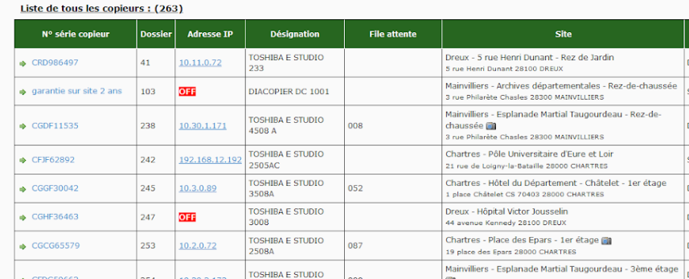
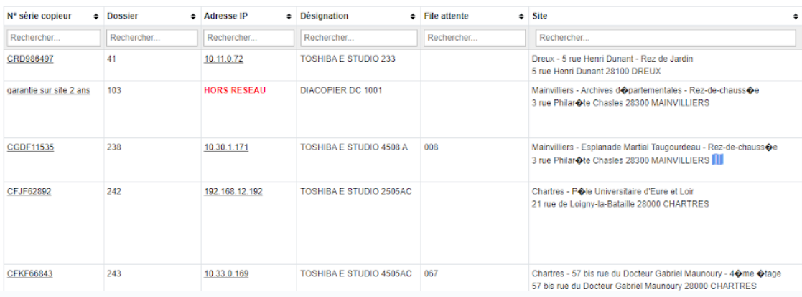

Projet Copieur
Crée par : Titouan CLAPIERInformation du projet
- Category: Application Web
- Date du projet: 02/01/2023
- Type: projet de stage
Detail
Languages : PHP, HTML, CSS, Javascript, SQL.
Framework : personnaliser.
Librairie : Bootstrap.
Outils : Visual studio code
Contexte donné :
Développement d'une application de gestion de parc de copieurs subventionnés par
le Conseil Général dans plusieurs autres organismes ou en son sein.
Cette application devra permettre aux employés en charge des copieurs de gérer le nombre de copies réalisées
par chaque copieur présent dans plusieurs sites et plusieurs services, de gérer les personnes capables de
modifier cette base de données et de modifier les détails de certains copieurs.
Compétences utilisées :
Gérer le patrimoine informatique
▸Mettre en place et vérifier les niveaux d'habilitation associés à un service
▸Vérifier le respect des règles d'utilisation des ressources numériques
Répondre aux incidents et aux demandes d'assistance et d'évolution
▸Traiter des demandes concernant les applications
Travailler en mode projet
▸Planifier les activités
▸Évaluer les indicateurs de suivi d'un projet et analyser les écarts
Gérer le patrimoine informatique :
Exploiter des référentiels, normes et standards adoptés par le prestataire informatiqueMise en place et vérifier les niveaux d'habilitation associés à un service grace à un système d'authentification
Vérifier le respect des règles d'utilisation des ressources numériques en suivant la charte informatique
Répondre aux incidents et aux demandes d'assistance et d'évolution :
Répondre, suivre et orientées des demandes du perssonels
Evolution de l'application


Travailler en mode projet :
Planifications et suivis des activités via diférentes réunion